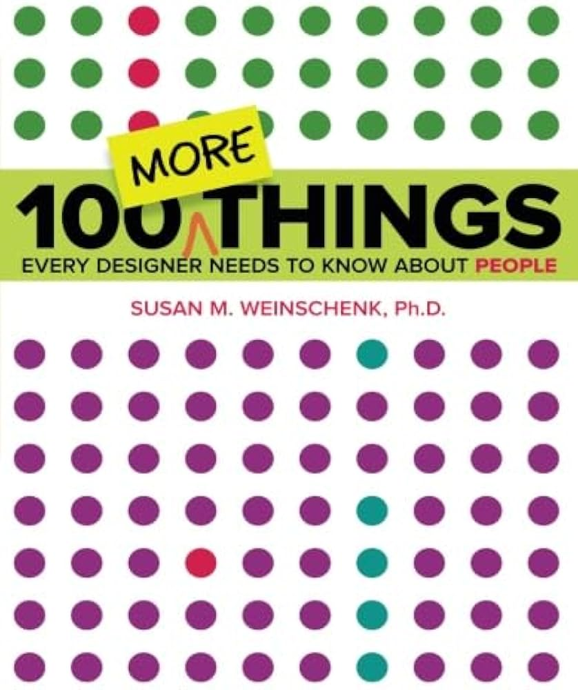

THIJS
Vormvrije Signatuur
Specialize Me 1

Onderzoeken & Experimenteren
We gingen het jaar van start met het thema 'Onderzoeken'. Tijdens Specialize Me
leerden we een aantal
kernpunten die van toepassing komen wanneer je vanuit het perspectief van een echte creative developer
onderzoek doet naar een bepaalde doelgroep. Daarnaast hebben we tijdens TLE 1.1 - Experimenteren de vrijheid
gekregen
om
aan het begin van elke week een experiment te bedenken op basis van analyses en onderzoek uit Specialize Me.
Dit werd volledig in samenwerking met de teamgenoten gedaan en in principe mochten we alles experimenteren wat
we wilden.
Voor mij was het probleem met het experimenterende deel dat we juist té veel vrijheid kregen.
Daardoor werden we naar mijn mening niet genoeg gestuurd en was het op een aantal momenten erg onduidelijk.
Verder had ik helaas niet veel interesse in het onderzoekende deel, met als uitzondering de interviews &
usability tests.
Ontwerpen & Agency
Tijdens de tweede lesperiode werden de thema's Ontwerpen & Agency behandeld. We
kregen met name les over
toegankelijkheid, UX design en UI design. Verder moesten we aan de hand
van design sprints inventieve ideeën bedenken voor onze opdrachtgever. Deze opdrachtgever was een bedrijf
genaamd Open Hiring, waarvoor wij een website of web-app moesten bouwen waar werkzoekenden anoniem kunnen
solliciteren. Hoewel wij vanuit de agency IODigital eigenlijk de opdracht kregen, omdat Open Hiring een
klant van IODigital is. Wij kregen dus ook alle feedback en informatie van de medewerkers van
IODigital. Het voordeel was dat zij ook veel verstand hebben van UI en UX design, waardoor zij ons beter
konden sturen en duidelijkere instructies konden geven.
Persoonlijk vond ik het erg leuk om een opdracht voor een daadwerkelijke opdrachtgever te maken. De lijst met
voorwaarden, maar ook de epics die we kregen,
gaven een veel duidelijkere richting dan de experimenten waarbij we zelf alles moesten bedenken. Ook heb ik al
sinds een aantal jaar voordat ik begon met deze opleiding veel
interesse in UI design. Ik werk al ongeveer 4 jaar met Photoshop, waarbij ik bij sommige projecten die ik
heb gemaakt ook goed moest nadenken over layouts, kleuren, compositie, etc. Dus dat past hier goed bij.
Nachtkastboek
Ik heb het boek '100 MORE Things Every Designer Needs to Know About People'
gelezen.
In dit boek staan, zoals
de titel al beschrijft, 100 dingen die erg handig zijn om te weten als ontwerper. Ik heb uit dit boek een
hoop
inzichten gehaald die ik ook gesorteerd heb in een apart google document. Ik heb daarbij
inzichten ge-highlight die belangrijk zouden kunnen zijn voor TLE, deze signatuuropdracht (en/of voor mijzelf als persoon), of voor beide.
Veel onderwerpen in dit boek gaan deels over de psychologische effecten die bepaalde UX/UI keuzes op de
gebruikers van
je product hebben. Ik vind psychologische onderwerpen vaak interessant, waardoor dit boek mij erg aansprak.
Het boek bevat ook nog
andere onderwerpen en veel design tips, hoewel ik alleen degene in de Inzichten voor
mijzelf dropdown heb toegevoegd waar ik interessante informatie
uit heb gehaald dat voor mij persoonlijk handig zou kunnen zijn. In het stuk Wat heb ik
geleerd? licht ik nog verder toe hoe ik
specifieke hoofdstukken heb toegepast.
Over het algemeen heb ik heel veel uit dit boek kunnen leren en vond ik het een erg interessant boek, ook al
werd er iets minder over UI design uitgelegd dan ik had gehoopt, behandeld het boek alsnog veel relevante
onderwerpen voor het beroep als ontwerper. En gelukkig waren er ook een hoop onderwerpen die relevant waren
voor het TLE project.
Inzichten voor mijzelf
- 1. People Prefer Curved Shapes
- 22. Brain Activity Predicts Decisions Before They’re Consciously Made
- 27. Reading Online May not be Reading
- 34. Small Steps Can Change Self-Stories
- 48. Creativity Starts with the Executive Attention Network
- 56. Being a Perfectionist can Ruin Creative Work
- 73. Gamers are All Ages and All Genders
Inzichten voor TLE
- 1. People Prefer Curved Shapes
- 6. Peripheral Vision is Like a Low-Resolution Image
- 18. Confidence Triggers Decisions
- 22. Brain Activity Predicts Decisions Before They’re Consciously Made
- 27. Reading Online May not be Reading
- 42. When People Feel Connected, They Work Harder
- 43. Devices with Alerts Lower Cognitive Performance
- 55. The right Kind of Collaboration Increases Creativity
- 56. Being a Perfectionist can Ruin Creative Work
- 57. People Think and Feel with Their Bodies
- 58. People Naturally Gesture
- 60. Thumbs can Reach Only so Far
- 68. Everyone Uses Smartphones for News and Important Life Events/li>
- 70. If the Task Takes Less than 5 Minutes, People Will Use Their Smartphones
- 77. Over Half of the People Over Age 65 in the US use the Internet
- 78. People Over 40 Have Presbyopia

Mijn Voorkeur
Misschien was het al duidelijk, maar zo niet; mijn voorkeur gaat naar Ontwerpen
& Agency.
Zoals ik eerder al benoemde, heb ik altijd al sinds een aantal jaar interesse in UI design. Dit heeft een
grote impact gehad op mijn keuze, omdat dit voor een deel werd behandeld bij ontwerpen. Verder vond ik het erg
fijn om duidelijke instructies en regels te krijgen om te volgen.
Bij Onderzoeken & Experimenteren was
het
alleemaal erg onduidelijk voor mij, en had ik moeite om mijzelf te motiveren. Ik heb helaas wel vaker last van
de
zogenaamde "creative block" waardoor je eigenlijk heel snel al je motivatie verliest.
Bij ontwerpen & Agency was het fijn dat een groot deel van het onderzoek al voor ons was gedaan. Ook kregen we
extra tips van de medewerkers van IODigital en alles was over het algemeen veel duidelijker en we meer werden
gestuurd in een specifieke richting met het product dat we moesten ontwerpen.
Wat heb ik geleerd?
Zoals ik al eerder heb benoemd, wilde ik met name meer leren over UI design. Ook wilde ik me verder verdiepen
in de denkwijze van een ontwerper & creatief technoloog. Over het algemeen heb ik op beide leerpunten veel
voortgang gemaakt, maar ik ben nog niet perfect. Ik heb uit mijn boek veel tips en informatie
gehaald over UI en UX design. Een aantal van deze tips zijn ook zeker gebruikt om deze signatuuropdracht te
maken, bijvoorbeeld de informatie uit hoofstuk 1, dit betreft dat mensen het fijner vinden om naar ronde
vormen te kijken dan vormen met scherpe hoeken. Ik heb hiervoor bijvoorbeeld de border-radius van sommige
elementen hoger gezet, zodat deze ronder worden. Ook heb ik hoofdstuk 22 gebruikt, wat gaat over het verdelen
van informatie in bepaalde stukken met duidelijke headers erboven.
De andere hoofdstukken die bij het stuk over mijn nachtkastboek in de dropdown
stonden zijn onderwerpen waar ik specifiek inzichten over mijzelf als persoon uit heb kunnen halen.
Dit zijn hoofdstuk 34, 48 en 56. Hoofdstuk 73 is een globaal punt die voor deze opleiding belangrijk is, maar
niet direct een inzicht voor mij als persoon met zich mee heeft gebracht.
Hoofdstuk 34 gaat over het veranderen van self-stories. Self-stories zijn een
soort verhalen die je jezelf verteld en waarvan je jezelf overtuigd. Dit hoofdstuk was voor mij interessant,
omdat dit te maken heeft met het feit dat ik sinds ongeveer 1-2 jaar geleden meer moeite doe om mijzelf te
veranderen. Een
voorbeeld hiervan is dat ik een hele lange tijd mijzelf had overtuigd dat ik nooit sneakers zou passen, omdat
die vroeger vaak te smal waren voor mij. Hierdoor wilde ik dus heel lang geen sneakers proberen te dragen,
omdat ik altijd dacht dat ze te smal zouden zijn. Sinds een aantal weken geleden heb ik voor het eerst
smallere sneakers geprobeerd en ze passen prima. Een relevanter voorbeeld voor mijn persoonlijke ontwikkeling
is dat ik heel lang overtuigd was van mijzelf dat ik vrij verlegen was, wat goed past bij een valkuil van mijn
belbin-rol (de plant). Deze valkuil is namelijk beledigd in mijn schulp kruipen als mijn ideeën kritisch
bekeken worden. Ik deed dit een hele lange tijd ook heel erg, maar vorig jaar besloot ik om een dit simpelweg
los te laten, wat gelukkig ook goed gelukt is.
Hoofdstuk 48 gaat over het stellen van een vraag aan jezelf. Dit helpt bij het in werking brengen van je
hersenen als je aan een taak moet werken en deze taak ook voor jezelf wil verduidelijken. Ik had bij TLE -
Experimenteren de feedback van mijn teamgenoten dat ik taken moet verduidelijken voor mijzelf, omdat ik af en
toe moeite heb met het begrijpen van de taken die ik moet doen. Ik ga dus zeker oefenen met het stellen van
een vraag aan mijzelf, om mijzelf te helpen op dit gebied.
Hoofdstuk 56 gaat over het feit dat perfectionisme voor problemen kan zorgen. Ik kan soms erg
perfectionistisch zijn, dus ik doe mijn best om het lost te laten. Helaas is dit bij TLE - Agency niet zo goed
gelukt, waardoor ik mijzelf erg overwerkt heb tijdens dat project. Gelukkig had ik aan het einde van TLE al
een SMART doel hiervoor gesteld
om dit hopelijk zo snel mogelijk te verbeteren.